第 22 章 ggplot2之图例系统
这一章，我们一起学习ggplot2中的图例系统，内容相对简单，但还是推荐大家阅读ggplot2官方文档
22.1 图例系统
为了方便演示，我们还是用熟悉的配方ggplot2::mpg
## ── Attaching core tidyverse packages ──────────────────────── tidyverse 2.0.0 ──
## ✔ dplyr 1.1.3 ✔ readr 2.1.4
## ✔ forcats 1.0.0 ✔ stringr 1.5.0
## ✔ ggplot2 3.4.3 ✔ tibble 3.2.1
## ✔ lubridate 1.9.2 ✔ tidyr 1.3.0
## ✔ purrr 1.0.2
## ── Conflicts ────────────────────────────────────────── tidyverse_conflicts() ──
## ✖ dplyr::filter() masks stats::filter()
## ✖ dplyr::lag() masks stats::lag()
## ℹ Use the conflicted package (<http://conflicted.r-lib.org/>) to force all conflicts to become errors
mpg %>%
ggplot(aes(x = displ, y = hwy, color = factor(cyl))) +
geom_point() 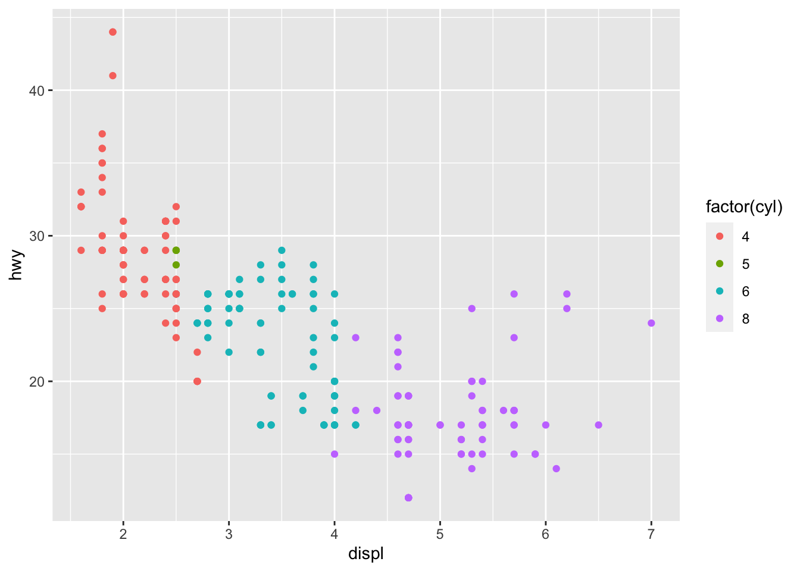
如果想调整图例的样式，可以使用guides()函数，用法类似上节课中的theme函数, 具体参数为：
- 要么是
字符串(i.e."color = colorbar"or"color = legend"), - 要么是
特定的函数(i.e.color = guide_colourbar()orcolor = guide_legend())
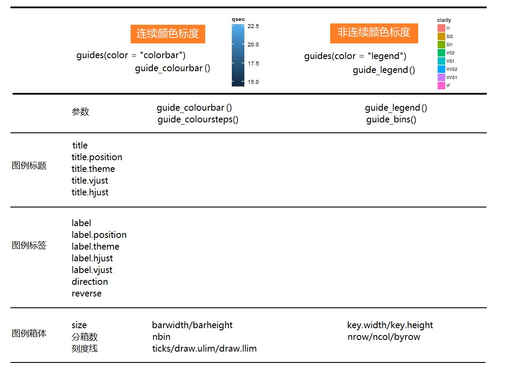
以下 guides() 函数族用于控制图例的外观
-
guide_colorbar(): continuous colors -
guide_legend(): discrete values (shapes, colors) -
guide_axis(): control axis text/spacing, add a secondary axis -
guide_bins(): creates “bins” of values in the legend -
guide_colorsteps(): makes colorbar discrete
knitr::include_graphics("images/img/guides_examples.png")
22.2 案例详解
mpg %>%
ggplot(aes(x = displ, y = hwy, color = factor(cyl))) +
geom_point() +
ggtitle("This is my title") +
labs(x = "x_displ", y = "y_hwy") +
guides(color = "legend")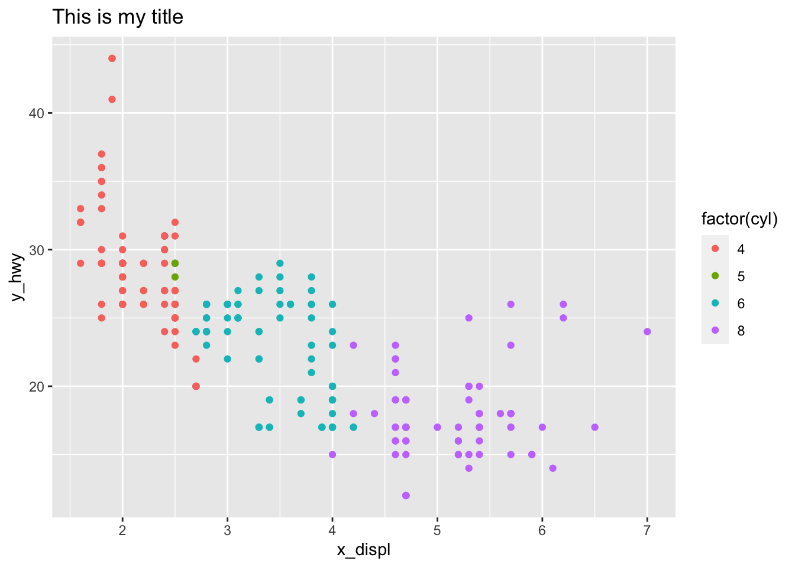
mpg %>%
ggplot(aes(x = displ, y = hwy, color = factor(cyl))) +
geom_point() +
ggtitle("This is my title") +
labs(x = "x_displ", y = "y_hwy") +
guides(color = guide_legend(
title = "my title",
label.hjust = 1
)
)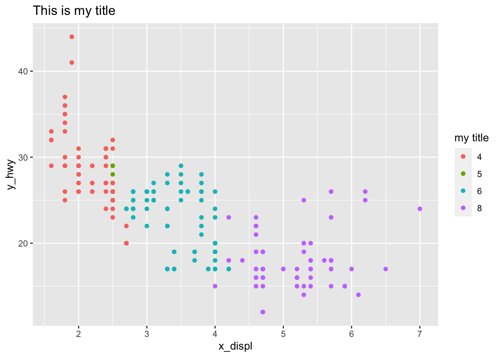
mpg %>%
ggplot(aes(x = displ, y = hwy, color = factor(cyl))) +
geom_point() +
ggtitle("This is my title") +
labs(x = "x_displ", y = "y_hwy") +
guides(color = guide_legend(
ncol = 4
)
)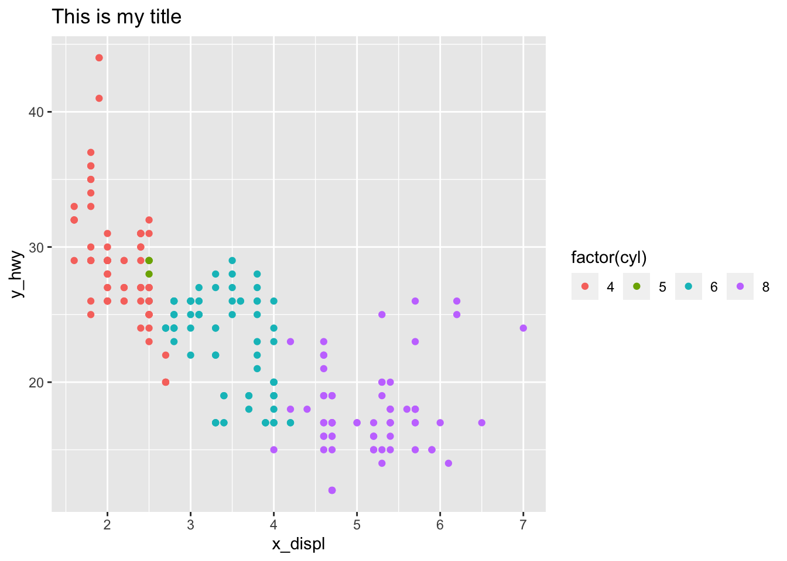
mpg %>%
ggplot() +
geom_jitter(aes(x = cty, y = hwy, color = class), key_glyph = draw_key_pointrange) + #<<
guides(color = guide_legend(nrow = 1)) +
theme(legend.position = "top",
axis.text = element_text(face = "italic", color = "navy"),
plot.background = element_rect(fill = "#a0d1f2"),
panel.background = element_blank(),
panel.grid = element_line(linetype = "dotdash"))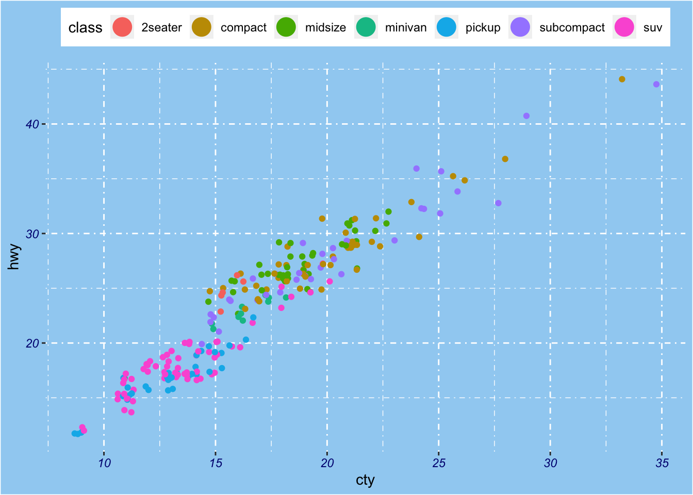
mpg %>%
ggplot(aes(x = displ, y = hwy, color = factor(cyl))) +
geom_point() +
ggtitle("This is my title") +
labs(x = "x_displ", y = "y_hwy") +
guides(color = guide_legend(
title = "title is too high",
title.position = "top",
title.vjust = 5,
label.position = "left",
label.hjust = 1,
label.theme = element_text(size = 15,
face = "italic",
colour = "red",
angle = 0),
keywidth = 5,
reverse = TRUE
)
)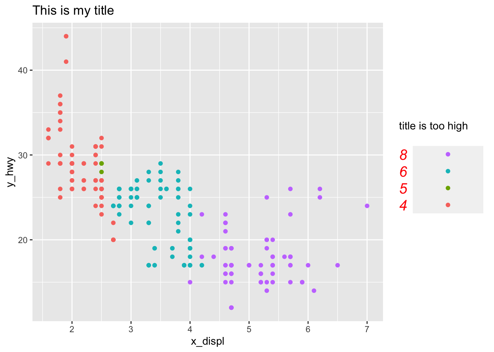
22.3 删除其中一个图例
mpg %>%
ggplot(aes(x = displ, y = hwy, color = class, size = cyl)) +
geom_point()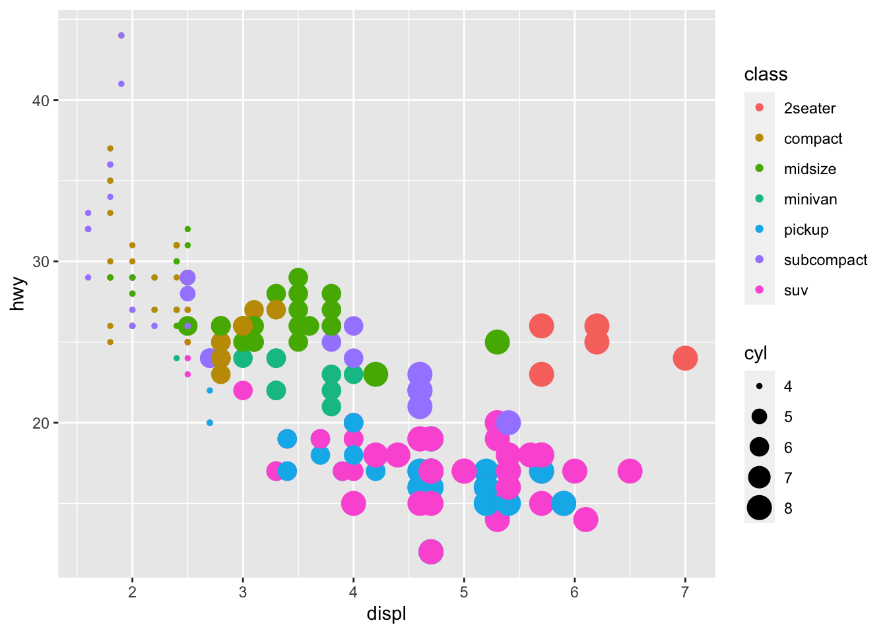
比如，我们想删除size这个图例，那么需要这样做
mpg %>%
ggplot(aes(x = displ, y = hwy, color = class, size = cyl)) +
geom_point() +
guides(
color = guide_legend("type"), # keep
size = "none" # remove
)
或者
mpg %>%
ggplot(aes(x = displ, y = hwy, color = class, size = cyl)) +
geom_point() +
guides(
color = guide_legend("type"), # keep
size = guide_none() # remove
)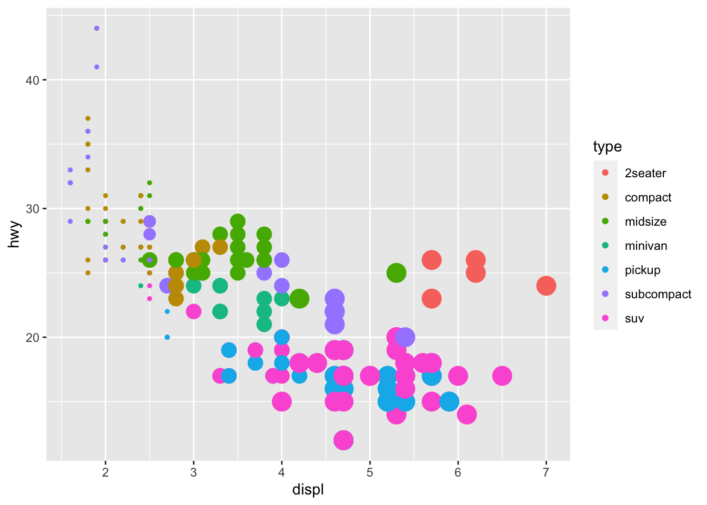
22.4 合并图例
library(tidyverse)
library(palmerpenguins)
penguins %>%
ggplot(
aes(x = bill_length_mm, y = bill_depth_mm,
color = body_mass_g, size = body_mass_g)
) +
geom_point(alpha = 0.6) +
scale_color_viridis_c()## Warning: Removed 2 rows containing missing values (`geom_point()`).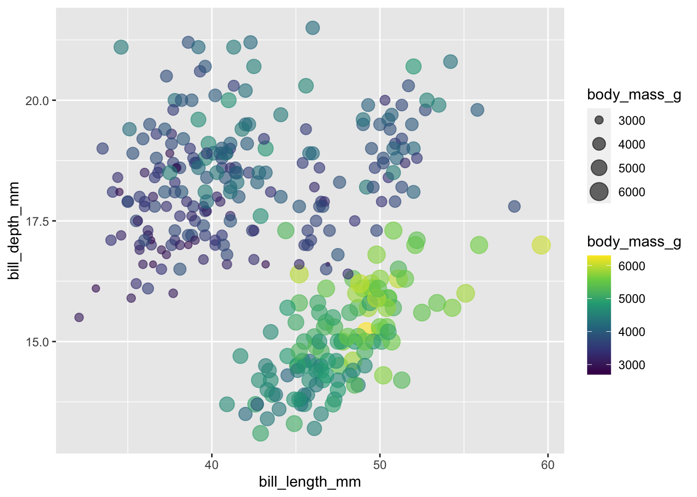
这里color 和 size 都使用了body_mass_g映射，我们可以将两者合并
# merge similar guides
penguins %>%
ggplot(
aes(x = bill_length_mm, y = bill_depth_mm,
color = body_mass_g,size = body_mass_g)
) +
geom_point(alpha = 0.6) +
scale_color_viridis_c() +
guides(color = guide_legend())## Warning: Removed 2 rows containing missing values (`geom_point()`).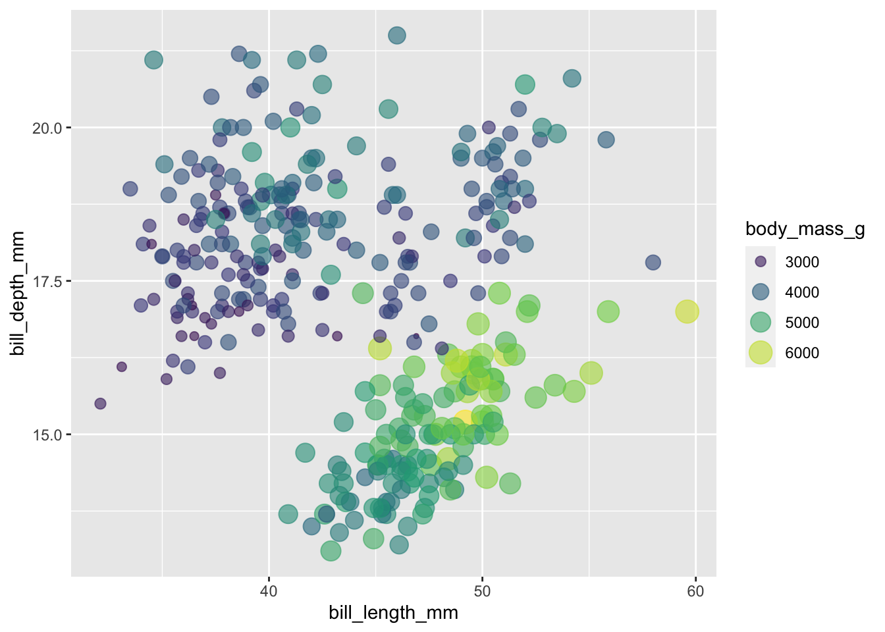
更直观的方法
penguins %>%
ggplot(
aes(x = bill_length_mm, y = bill_depth_mm,
color = body_mass_g, size = body_mass_g)
) +
geom_point(alpha = 0.6) +
scale_color_viridis_c() +
guides(
color = guide_legend(),
size = guide_legend()
)## Warning: Removed 2 rows containing missing values (`geom_point()`).
或者
penguins %>%
ggplot(
aes(x = bill_length_mm, y = bill_depth_mm,
color = body_mass_g, size = body_mass_g)
) +
geom_point(alpha = 0.6) +
scale_color_viridis_c() +
guides(
colour = guide_legend("title"),
size = guide_legend("title")
)## Warning: Removed 2 rows containing missing values (`geom_point()`).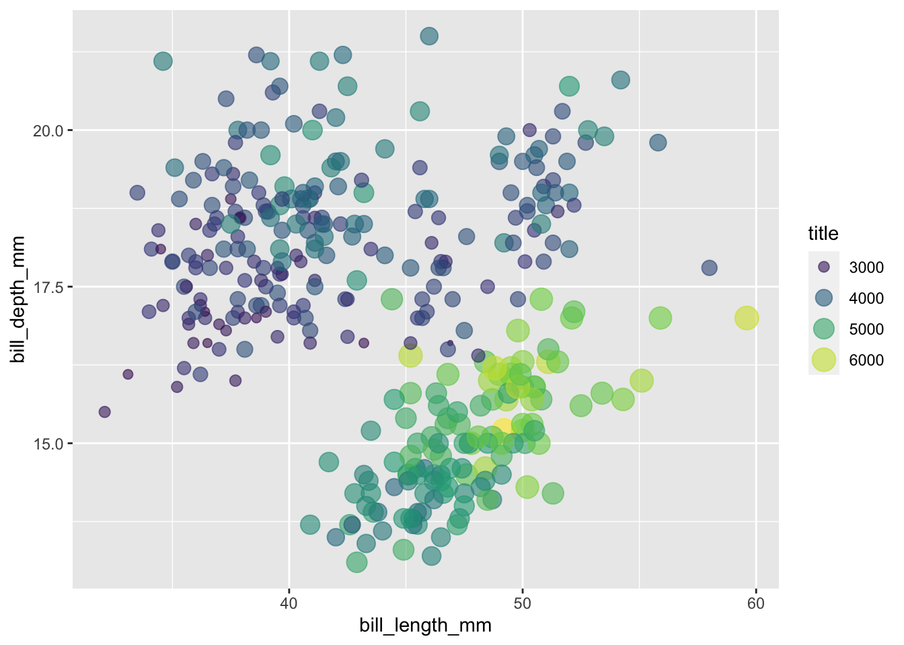
最省力的是
penguins %>%
ggplot(
aes(x = bill_length_mm, y = bill_depth_mm,
color = body_mass_g, size = body_mass_g)
) +
geom_point(alpha = 0.6) +
scale_color_viridis_c(guide = "legend") ## Warning: Removed 2 rows containing missing values (`geom_point()`).
22.5 小结
到了这里，ggplot2内容的差不多介绍完了，最后做下自我测试，能读懂下面代码(来源 Emi Tanaka)的意思？
mtcars %>%
as_tibble() %>%
ggplot(aes(x = wt, y = mpg, shape = factor(vs), color = hp)) +
geom_point(size = 3) +
colorspace::scale_color_continuous_sequential(palette = "Dark Mint") +
scale_shape_discrete(labels = c("V-shaped", "Straight")) +
labs(
x = "Weight (1000 lbs)", y = "Miles per gallon",
title = "Motor Trend Car Road Tests",
shape = "Engine", color = "Horsepower"
) +
theme(
text = element_text(size = 18, color = "white"),
rect = element_rect(fill = "black"),
panel.background = element_rect(fill = "black"),
legend.key = element_rect(fill = "black"),
axis.text = element_text(color = "white"),
plot.title.position = "plot",
plot.margin = margin(10, 10, 10, 10)
) +
guides(
shape =
guide_legend(override.aes = list(color = "white"))
)